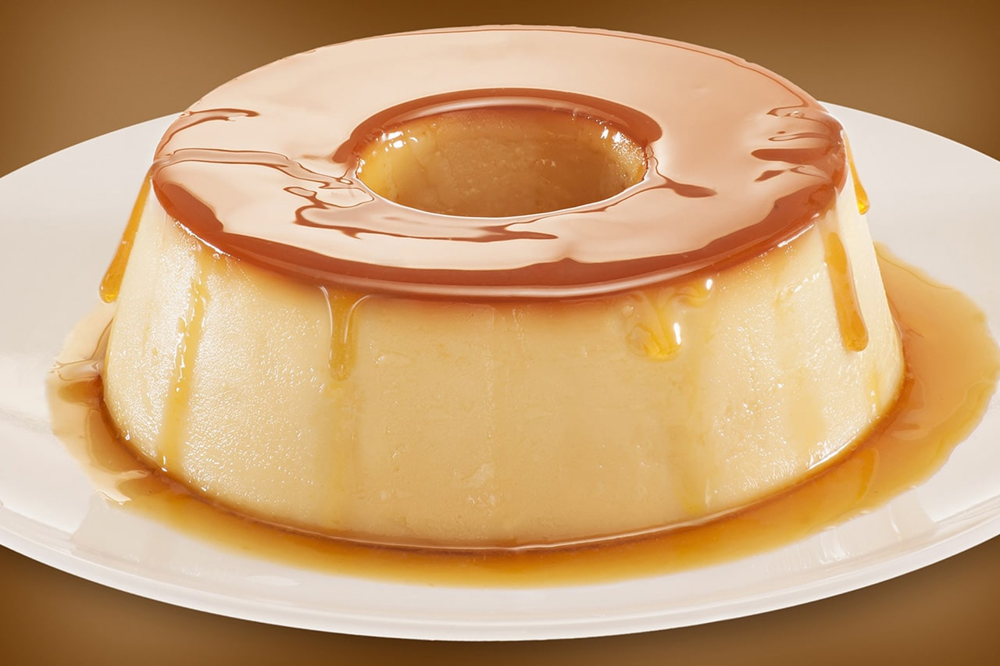
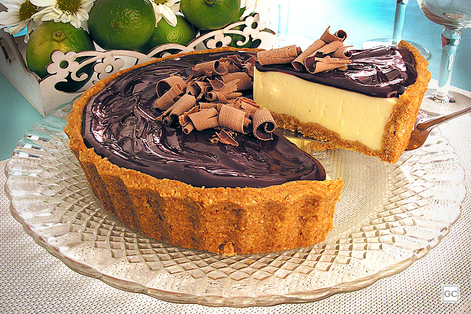
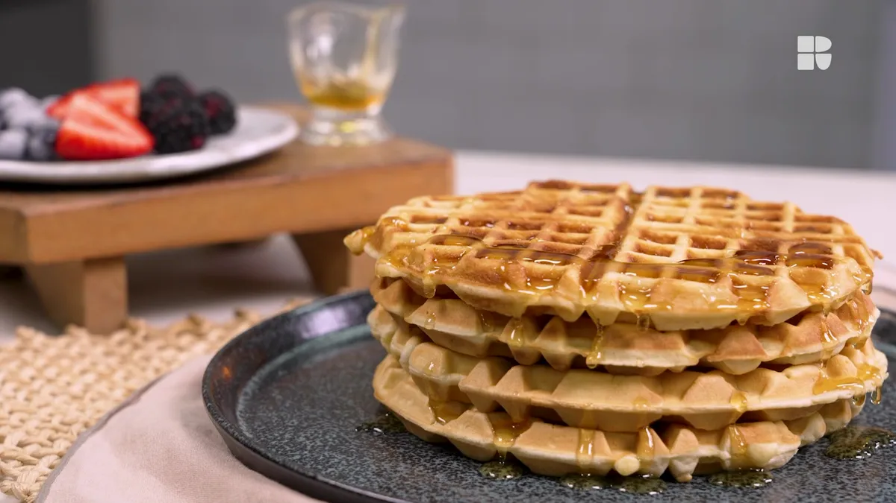
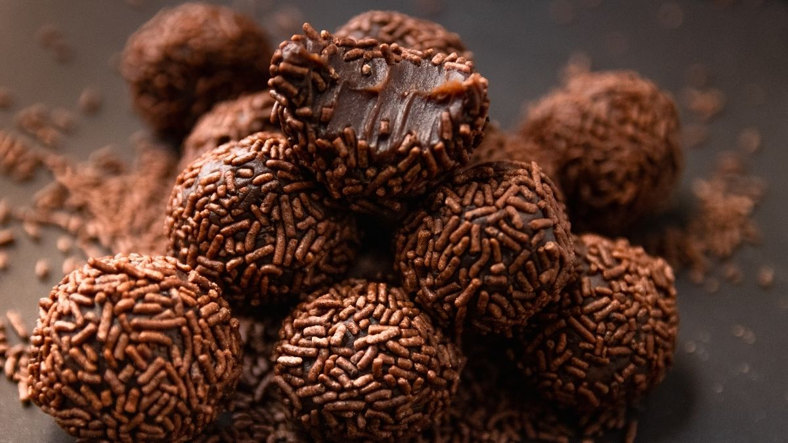
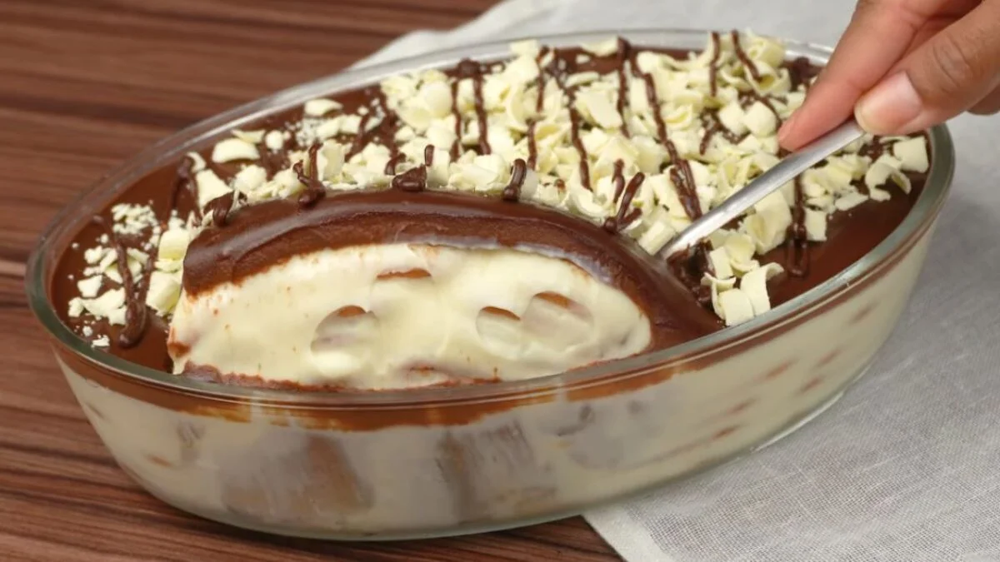

• Em um recipiente, misture as maçãs fatiadas com o açúcar e a canela. Reserve.
• Em outro recipiente, misture a farinha de trigo, o açúcar mascavo, a manteiga derretida e a aveia em flocos até formar uma farofa.
• Forre o fundo de uma forma com parte da farofa.
• Distribua as maçãs sobre a farofa na forma.
• Cubra as maçãs com o restante da farofa.
• Leve ao forno preaquecido por aproximadamente 40 minutos, ou até dourar.
• Retire do forno e deixe esfriar antes de servir.

Pudim
Pudim
Ingredientes:
• 1 lata de leite condensado
• A mesma medida (da lata) de leite integral
• 3 ovos
• 1 xícara (chá) de açúcar para caramelizar a forma
Modo de Preparo:
• Preaqueça o forno a 180°C.
• Em uma panela, coloque o açúcar e leve ao fogo baixo, mexendo sempre até derreter e formar um caramelo. Despeje o caramelo na forma de pudim e reserve.
• No liquidificador, bata o leite condensado, o leite integral e os ovos até obter uma mistura homogênea.
• Despeje a mistura na forma caramelizada.
• Cubra a forma com papel-alumínio e leve para assar em banho-maria no forno preaquecido por aproximadamente 1 hora.
• Após esse tempo, retire o papel-alumínio e deixe assar por mais 30 minutos ou até que o pudim esteja firme.
• Retire do forno, deixe esfriar e leve à geladeira por algumas horas antes de desenformar.
• Sirva gelado.

Torta de Limão
Torta de Limão
Ingredientes:
• 1 pacote de biscoito maisena
• 100g de manteiga derretida
• 1 lata de leite condensado
• 1 caixa de creme de leite
• Suco de 3 limões
• Raspas de limão para decorar
Modo de Preparo:
• Triture os biscoitos maisena até obter uma farofa fina.
• Misture a farofa de biscoito com a manteiga derretida até formar uma massa homogênea.
• Forre o fundo de uma forma com fundo removível com a massa de biscoito, pressionando bem.
• Leve ao forno preaquecido a 180°C por 10 minutos. Retire e deixe esfriar.
• Em um recipiente, misture o leite condensado, o creme de leite e o suco de limão até obter um creme homogêneo.
• Despeje o creme sobre a massa de biscoito já fria.
• Leve à geladeira por pelo menos 4 horas para firmar.
• Antes de servir, decore com raspas de limão.

Waffle
Waffle
Ingredientes:
• 2 xícaras (chá) de farinha de trigo
• 2 colheres (chá) de fermento em pó
• 2 colheres (sopa) de açúcar
• 1/2 colher (chá) de sal
• 2 ovos
• 1 3/4 xícaras (chá) de leite
• 1/2 xícara (chá) de óleo
• 1 colher (chá) de essência de baunilha
Modo de Preparo:
• Pré-aqueça a máquina de waffle conforme as instruções do fabricante.
• Em uma tigela grande, misture a farinha de trigo, o fermento em pó, o açúcar e o sal.
• Em outra tigela, bata os ovos levemente e adicione o leite, o óleo e a essência de baunilha. Mexa bem.
• Despeje a mistura líquida na mistura de ingredientes secos e mexa até ficar homogêneo.
• Despeje a massa na máquina de waffle e espalhe uniformemente.
• Feche a máquina e cozinhe até que o waffle fique dourado e crocante.
• Retire cuidadosamente o waffle da máquina e sirva quente.
• Repita o processo com a massa restante.

Brigadeiro
Brigadeiro
Ingredientes:
• 1 lata de leite condensado
• 3 colheres (sopa) de chocolate em pó
• 1 colher (sopa) de manteiga ou margarina
• Chocolate granulado para decorar
Modo de Preparo:
• Em uma panela, misture o leite condensado, o chocolate em pó e a manteiga.
• Leve ao fogo baixo, mexendo sempre, até desgrudar do fundo da panela.
• Desligue o fogo e transfira a massa para um prato untado com manteiga.
• Deixe esfriar por alguns minutos.
• Com as mãos untadas com manteiga, faça bolinhas com a massa de brigadeiro.
• Passe as bolinhas no chocolate granulado e coloque em forminhas de papel.
• Sirva em temperatura ambiente.

Pavê
Pavê
Ingredientes:
• 1 pacote de biscoito maisena
• 1 lata de leite condensado
• 2 latas de leite (utilize a lata de leite condensado vazia para medir)
• 2 gemas peneiradas
• 2 colheres (sopa) de amido de milho
• 1 colher (sopa) de essência de baunilha
• 1 lata de creme de leite sem soro
• 1 xícara (chá) de chocolate em pó
• 1 xícara (chá) de leite para molhar os biscoitos
Modo de Preparo:
• Em uma panela, misture o leite condensado, as gemas peneiradas, o amido de milho e o leite. Leve ao fogo médio, mexendo sempre, até engrossar.
• Desligue o fogo e adicione a essência de baunilha e o creme de leite sem soro. Misture bem e reserve.
• Em um recipiente, misture o chocolate em pó com o leite para molhar os biscoitos.
• Em uma travessa, monte camadas alternadas de biscoitos umedecidos no leite com chocolate e creme de baunilha, finalizando com o creme.
• Leve à geladeira por pelo menos 4 horas antes de servir.